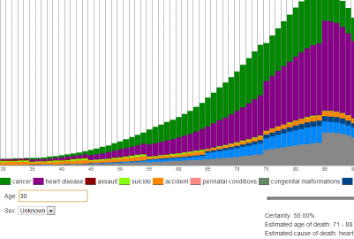

Personal project
Website to help with party planning, allows users to anonymously submit which of their friends have personal conflicts with their other friends, so anyone planning a party can search groups for personal conflicts.
Tech:
- HTML/CSS/Javascript
- Facebook Graph API
- jQuery
- JQuery UI
- Server-side Python
- MySQL
Features:
- Autocomplete search string from users facebook friends
- Fairly complex graph algoritihm to effieciently find group conflicts in minimal time.

Personal project
Website that allows people to see statistical probabilities of when they will die, along with probabilities of dying from different causes per year.
Tech:
- HTML/CSS/Javascript
- Angular.js
- Server-side Python
- Twitter Bootstrap
Features:
- Reads CSV data gathered from the CDC on death probailities and causes by age and gender.